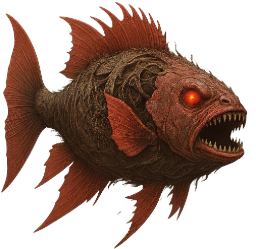
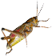

ВИД № 032 / V10Условия ловли
Небольшая глубина—
Средняя глубина—
Дно✓
Глубина указана относительно глубины водоёма в точке заброса.
Ловится на спиннинг
Агрессивность
Множитель сопротивления×5
Базовая сила сопротивления: вес × 5. Разница уровней рыбы и снасти может увеличить нагрузку.
Коэффициент выбора
1 / 20 = 0,05
Это вес вида при выборе улова с учётом условий ловли, а не вероятность поклёвки в процентах.
Данные каталога
Клиент v10 · снимок 29.09.2026. Автоматического обновления нет. Для специальных находок могут действовать дополнительные условия снастей.
Вес и редкость
3 кг — 10 кгобычный диапазон
обычный3 кг – < 10 кг
необычныйот 10 кг
редкийот 30 кг
эпическийот 50 кг
легендарныйот 70 кг
мифическийот 90 кг
мировойот 110 кг
Порог следующей редкости завершает предыдущий диапазон. Трофей — вес строго больше 10 кг. 50 кг — опорный порог эпической редкости, а не максимальный возможный вес.
Наживки

Кузнечик Моллюск
Моллюск Малек (живой)
Малек (живой) Кусочки рыбы
Кусочки рыбы
Прикормки
 КровьПоклёвки: +75%
КровьПоклёвки: +75% ПелетсПоклёвки: +50%
ПелетсПоклёвки: +50%
Водоёмы

Могильник
Ивановы Колья · 40–45 ур.
Разряд 7 · Радиация 10
Исходные параметры
| key | red-root |
|---|---|
| minWeight | 3000 |
| maxWeight | 10000 |
| rarity | 1 |
| rarity-max | 20 |
| rareWeight | 50000 |
| price | 200 |
| depth | bottom |
| areal-grass | true |
| areal-stone | true |
| areal-sand | true |
| frameId | 29 |
| uid | 32 |
| agressiveRate | 500 |
| type | monster |
| tackleBait | true |
price — исходный параметр, а не итоговая цена продажи.